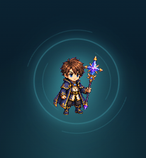
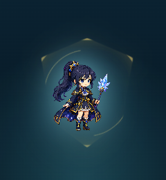
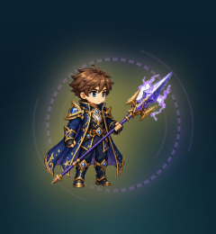
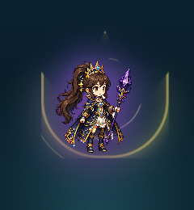

男主角 Lv.1

武器｜星光法杖
裝備｜專注水晶
女主角 Lv.4

武器｜冰晶法核
裝備｜守護披風
男主角 Lv.7

武器｜雷鳴星槍
裝備｜連擊項鍊
女主角 Lv.10

武器｜暗影魔晶
裝備｜勇者冠冕
① 等級帶來造型變化 ② 武器與裝備自由搭配
男女主角各有 Lv.1–10 外觀，搭配五種武器與裝備特效。
畫面呈現遊戲試衣間的實際預覽，讓學生看見下一階段的成長目標。
實際試衣間局部放大截圖拼版・展示四種等級與裝備組合・預覽不代表已購買，實際取得依等級與金幣條件。